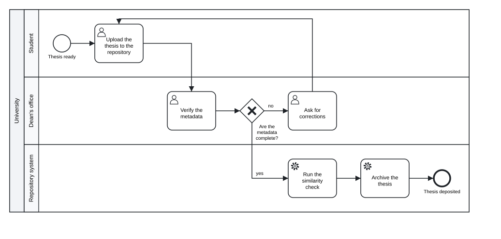

Chapter 15 Integrations
In this chapter you will check models in continuous integration with the GitHub Action tok-lang-bpm/setup-tok@v1, and with the same commands in Forgejo, Codeberg or any other CI · keep models canonical with a pre-commit hook · put models into R Markdown, Quarto and Jupyter documents · move models between tok and Camunda Modeler, Camunda Web Modeler, bpmn.io and other BPMN tools, with the MIWG round-trip results as evidence of what survives · hand logs to process-mining tools and decisions to other DMN engines · organise a version-control workflow around text, diffs, reviews and the layout sidecar
A model is useful when it is where people work: in the repository with the code of the system that runs the process, in the report that analyses it, in the modelling tool a colleague prefers, in the engine that executes it. Because a tok model is a text file and the engine produces standard files, it fits into all of these places without special infrastructure. This chapter goes through them one by one.
The examples use a small model of a thesis deposit:
tok 1.0 "Thesis deposit"
pool university "University"
lane student "Student"
start ready "Thesis ready"
user upload "Upload the thesis to the repository"
lane office "Dean's office"
user verify "Verify the metadata"
xor complete "Are the metadata complete?"
user correct "Ask for corrections"
lane system "Repository system"
service plagiarism "Run the similarity check"
service archive "Archive the thesis"
end deposited "Thesis deposited"
flow ready -> upload -> verify -> complete
flow complete -> plagiarism "yes"
flow complete -> correct "no"
flow correct -> upload
flow plagiarism -> archive -> deposited
Figure 15.1: The thesis deposit, the model of the examples in this chapter.
Download the model (.tok) Download the BPMN export (.bpmn)
15.1 Continuous integration on GitHub
Continuous integration (CI) runs checks on every change pushed to a repository and on every pull request. For a repository of process models the checks are the obvious ones: every model passes tok check, and every model is in canonical form. The GitHub Action tok-lang-bpm/setup-tok@v1 does the first of them in one step. It installs tok from PyPI, puts the tok command on the PATH for the later steps of the job, checks the models, and shows their diagnostics as annotations on the lines of the files, so that a reviewer of a pull request sees an error next to the line that causes it.
| Input | Meaning |
|---|---|
version |
the version of tok-lang to install from PyPI; by default the latest |
check |
a glob of the models to check, by default **/*.tok; an empty string installs tok without checking anything |
lang |
the language of the diagnostics: en (the default) or pl |
fail-on |
the severity that fails the step: error (the default), or warning to fail on warnings too |
A workflow that checks the models, verifies their canonical form and keeps their BPMN exports as an artifact of the run, saved as .github/workflows/models.yml:
name: models
on:
push:
pull_request:
jobs:
models:
runs-on: ubuntu-latest
steps:
- uses: actions/checkout@v4
- name: Install tok and check the models
uses: tok-lang-bpm/setup-tok@v1
with:
check: "models/**/*.tok"
fail-on: warning
- name: Canonical form
run: |
status=0
for f in $(git ls-files 'models/*.tok'); do
tok fmt --check "$f" || status=1
done
exit $status
- name: Export BPMN and pictures
run: |
mkdir -p out
for f in $(git ls-files 'models/*.tok'); do
name=$(basename "$f" .tok)
tok bpmn "$f" -o "out/$name.bpmn"
tok svg "$f" -o "out/$name.svg"
done
- uses: actions/upload-artifact@v4
with:
name: diagrams
path: out/The second and third steps use the tok command that the action installed. Each command of tok takes one file, so the steps loop over the files that Git tracks. With fail-on: warning a model with a warning fails the run; use error while a repository still has warnings you have decided to accept. To pin the version of tok for reproducible runs, add version: with a version number; the outputs of a release 1.x do not change except for documented bug fixes, so a newer 1.x gives the same results for valid documents.
To install tok without checking anything, for example in a job that only exports, set check: "" and run the commands yourself in later steps.
15.2 Other CI systems
Nothing in the checks depends on GitHub. Every CI system that can run a shell with Python can do the same with three commands: pip install tok-lang, tok check and tok fmt --check. A script that checks every model and its canonical form, and fails when any of them fails:
#!/bin/sh
# check every model and its canonical form; exit 1 when any of them fails
status=0
for f in $(find models -name '*.tok' | sort); do
tok check "$f" || status=1
tok fmt --check "$f" || status=1
done
exit $statusOn a folder with three models, one of them not formatted:
models/complaint.tok: 0 error(s), 0 warning(s), 0 note(s)
models/complaint.tok: not in canonical form
models/reading-room.tok: 0 error(s), 0 warning(s), 0 note(s)
models/thesis-deposit.tok: 0 error(s), 0 warning(s), 0 note(s)The script ends with the exit status 1, which fails the job. tok check exits with 1 when a document has errors, and tok fmt --check when the file is not canonical; both exit with 0 otherwise. The fix is tok fmt -w models/complaint.tok.
Forgejo and Codeberg Actions read workflows from .forgejo/workflows/ in a syntax close to that of GitHub. The label in runs-on depends on the runners available to your repository:
on: [push, pull_request]
jobs:
models:
runs-on: docker
container: python:3.12
steps:
- uses: actions/checkout@v4
- run: pip install tok-lang
- run: sh check-models.shGitLab CI and other systems take the same commands:
Where a program reads the result, tok check FILE --json prints the diagnostics as JSON, with the smallest BPMN conformance class of the document:
{
"file": "models/thesis-deposit.tok",
"errors": 0,
"bpmn_class": "descriptive",
"diagnostics": []
}A repository can use it to enforce a conformance class, for example to require that published models stay in the descriptive class, or check them with tok check FILE --class descriptive, which reports every element outside the class as R075.
15.3 A pre-commit hook
CI finds problems after they are pushed. A Git hook finds them before the commit is made. The hook below checks every .tok file staged for the commit, and refuses the commit when one has errors or is not canonical. Save it as .git/hooks/pre-commit and make it executable:
#!/bin/sh
# refuse a commit with a model that has errors or is not in canonical form
status=0
for f in $(git diff --cached --name-only --diff-filter=ACM -- '*.tok'); do
tok fmt --check "$f" || status=1
tok check "$f" > /dev/null || { tok check "$f"; status=1; }
done
if [ $status -ne 0 ]; then
echo "fix the models above (tok fmt -w FILE formats a file) and commit again"
fi
exit $statusThe hook prints the diagnostics only for files with errors, to keep the output of a normal commit quiet. With the pre-commit framework, the same check is a local hook in .pre-commit-config.yaml; because each tok command takes one file, the entry loops over the files the framework passes:
repos:
- repo: local
hooks:
- id: tok
name: tok check and fmt --check
language: system
files: \.tok$
entry: sh -c 'status=0; for f in "$@"; do tok check "$f" >/dev/null || { tok check "$f"; status=1; }; tok fmt --check "$f" || status=1; done; exit $status' --A hook that formats the files instead of only checking them (tok fmt -w "$f" followed by git add "$f") is possible too. Checking is the safer default: it never changes a file behind the author’s back.
15.4 Models in documents
15.4.1 R Markdown and Quarto
The R package tokr registers a knitr engine called tok (Chapter 13). In an R Markdown document, load the package in a setup chunk, then write models in chunks of the engine:
```{r setup, include=FALSE}
library(tokr)
```
```{tok, fig.cap = "Thesis deposit"}
tok 1.0 "Thesis deposit"
start ready "Thesis ready"
user upload "Upload the thesis to the repository"
user verify "Verify the metadata"
end deposited "Thesis deposited"
flow ready -> upload -> verify -> deposited
```The chunk is drawn as a figure with its caption. The chunk option tok.output chooses what the chunk shows instead: "check" the diagnostics, "fmt" the canonical text, "bpmn" the BPMN XML; tok.export = "dir" also writes every exported file into a folder, so a report can link to the BPMN file of the model it shows. Quarto documents run R chunks through knitr, so the same chunks work in a .qmd file with engine: knitr.
A report that analyses a process can keep the model, its diagram, its simulation and the analysis in one document. A chunk with tok.output = "check" documents that the model was valid when the report was rendered; R chunks with tok_sim() produce the tables and plots of Chapter 11. For PDF output, which does not take the SVG pictures of the engine directly, use tok.output = "check" or include a picture exported in another format.
15.4.2 Jupyter
In a Jupyter notebook the Python package draws a model in a cell. api.svg returns the SVG text, and IPython displays it:
from IPython.display import SVG, display
from tok import api
text = open("15-thesis-deposit.tok", encoding="utf-8").read()
display(SVG(api.svg(text)))A small helper shows either the diagnostics or the diagram, which makes a notebook a convenient place to develop a model step by step:
def show(text):
problems = api.check(text)
for d in problems:
print("%s %s line %s: %s" % (d["severity"], d["code"], d["line"], d["message"]))
if not any(d["severity"] == "error" for d in problems):
display(SVG(api.svg(text)))The same helper works in JupyterLab, VS Code notebooks and other front ends that display SVG.
15.5 BPMN tools
The BPMN file that tok bpmn writes is standard BPMN 2.0 XML with diagram interchange, so every tool that reads BPMN reads it.
| Tool | How the model gets there | What you see |
|---|---|---|
| Camunda Modeler (desktop) | open the .bpmn file; for an executable model also the .dmn and .form files of tok export |
the diagram with every property; an executable model opens as a Camunda 8 diagram with the extensions in the properties panel, the decisions in the DMN editor, the forms in the form editor |
| Camunda Web Modeler | upload the files to a project | the same diagrams, shared with a team in the browser, and deployment to a Camunda 8 cluster |
| bpmn.io | open or drop the file in the viewer or the online modeler | the diagram as it looks in the bpmn-js toolkit, which the playground also uses (Chapter 12) |
| other BPMN tools | import BPMN 2.0 XML | the semantics of the model with the layout computed by tok |
The way back is tok import. A diagram drawn or edited in any of these tools converts to tok text, with what tok cannot express reported on standard error; with -o FILE.tok the drawing of the file is kept in a layout sidecar FILE.tok.layout next to the model, so that tok bpmn and tok svg draw the model as it was drawn (Chapter 8). A colleague can therefore keep working in Camunda Modeler while the repository keeps the text: import the changed file, review the diff of the text, and commit it.
15.5.1 How much survives a round trip
The evidence for exchange with other tools is the test suite of the BPMN Model Interchange Working Group (MIWG): 22 reference models written by different tools, from simple processes to collaborations with data and Camunda extensions. Each model is imported into tok, printed as text, read again and exported, and the semantic content of the export is compared with the reference fact by fact: structure, nodes, events, activities, gateways, flows, data, declarations, documentation, artifacts and Camunda extensions.
| Result | |
|---|---|
| models | 22 |
| facts kept | 3533 of 3770 (93.7 %) |
| models kept completely | A.1.0, A.2.0, A.3.0, A.4.0, C.2.0, C.5.0, C.6.0 |
| facts not kept | 237, each one reported by the import |
| facts added by design | 52, for example a participant for a process that no participant references |
| facts of vendor extensions (in 15 models) | 1019, not kept by design |
What is lost is listed with its reason, and none of it is lost silently. The largest groups are the isImmediate attribute of sequence flows, which most tools write as a default, the technology attribute implementation of tasks, imports of other files, transformations of data associations, embedded forms and forms referenced by a key, and extensions of other vendors. A second round trip, export, import and export again, does not change the semantic BPMN. The appendix on conformance gives the table per model.
The layout of the reference models is not compared: tok has no coordinates and lays every diagram out itself, or keeps the drawing in the sidecar.
15.6 Camunda 8
For an executable model, tok export writes everything Camunda 8 needs (the BPMN file with the Camunda extensions, the DMN files and the forms), and the files deploy through Camunda Modeler, Web Modeler or the REST API. Chapter 10 describes the executable layer, the deployment to Camunda 8 Run step by step, a Python script that drives an instance, and the conformance runs that verify the translation on Camunda.
15.7 Process-mining tools
tok sim --xes writes the simulated event log in XES (IEEE 1849-2016), which ProM, PM4Py, bupaR, Disco, Celonis and other process-mining tools read without any mapping; --log writes the same log as CSV, with the columns case, label, start and end that these tools map to case, activity and timestamps. In R, the event log of tok_sim() has the column names bupaR expects. Chapter 11 shows the code.
The direction from logs to models exists too: Tok.Fit in Julia estimates the durations, arrivals and branch probabilities of a model from an XES or CSV log of a real system and writes them into the document.
15.8 Decisions in other DMN engines
The decisions of a document of language 0.7 or 1.0 are exported by tok export as DMN 1.5 files, one per connected decision requirements graph, with a DMNDI diagram, so they open in DMN editors and run in DMN engines other than Camunda. Two details matter:
- Names in FEEL. In an executable document for Camunda the exporter writes FEEL names with spaces or symbols in backticks, which Camunda’s FEEL needs and standard FEEL does not have. For another engine, export the decisions from a document without the flag
executable, which writes standard FEEL. - Evaluation.
tok evalevaluates a decision with everything it requires, with FEEL at DMN conformance level 3. Its results are tested against the DMN Technology Compatibility Kit: at compliance level 2 all 126 results of 28 models pass, at level 3 3313 of 3331 results of 114 models (99.5 %), with every failing result listed with its reason. The same tests maketok evala reference to compare another engine against.
tok import FILE.dmn reads DMN 1.1 to 1.5 files from other tools into a document of language 0.7, so decision tables written elsewhere can be kept, reviewed and tested as text (Chapter 9).
15.9 A version-control workflow
Process models change: a regulation is amended, a step is automated, a role is merged into another. In tok the history of the model is the history of a text file, and the tools of software development apply to it unchanged.
Diffs. A change to a process is a change of a few lines. Adding a notification of the supervisor to the thesis deposit gives this diff:
@@ -11,10 +11,11 @@ pool university "University"
lane system "Repository system"
service plagiarism "Run the similarity check"
service archive "Archive the thesis"
+ service notify "Notify the supervisor"
end deposited "Thesis deposited"
flow ready -> upload -> verify -> complete
flow complete -> plagiarism "yes"
flow complete -> correct "no"
flow correct -> upload
-flow plagiarism -> archive -> deposited
+flow plagiarism -> archive -> notify -> depositedThe same change in BPMN XML touches the process, two sequence flows and the diagram interchange, with new coordinates for every shape that moved. The canonical form keeps diffs like this one small: whoever writes the model, and whatever editor they use, tok fmt prints it in one way, so the diff shows only what changed in the meaning.
Reviews. A pull request with a model change can be reviewed like a change of code: the reviewer reads the diff, CI shows the diagnostics as annotations, and the BPMN and SVG exports of the run show the new diagram. Comments refer to lines and identifiers. Combined with a mapping table for larger changes (Chapter 14), this is also the natural way to review models written by AI agents.
What to commit. Commit the .tok files, and their layout sidecars .tok.layout when the models were imported from a drawing tool and the drawing should be kept. The BPMN files, pictures, DMN files and forms are projections of the text; you can generate them in CI, as in the workflow above, or commit them as well for readers who do not have tok, but never edit them by hand: an edited export is overwritten by the next one. If they are committed, a CI step that exports and then runs git diff --exit-code checks that they are up to date.
The layout sidecar. The sidecar is a plain text file with one line per shape or edge, so it diffs and merges like the model. When an element is renamed or removed in the model, the line of the old identifier is ignored; new elements are placed next to their neighbours. A sidecar never changes the meaning of the model, so a conflict in it can always be resolved by taking either side, or by deleting the file to return to the automatic layout.
Tags and versions. A version of a procedure that is approved or published can be marked with a Git tag; for executable models the same version can be given to the process definition with version-tag= (Chapter 10), so that an instance in Camunda can be traced to the commit of the text it was deployed from.
Exercises
Exercise 15.1
- A repository with CI. Create a repository with a folder
models/holding two or three of the models of this book. Add the GitHub workflow of this chapter (or the Forgejo variant), push it, and open a pull request that introduces an error in one model. Where does the diagnostic appear, and what does the reviewer see? - Warnings as failures. Add a model with a warning to the repository of exercise 1 and run the workflow with
fail-on: errorand withfail-on: warning. When would you choose each setting for a repository of a team? - A pre-commit hook. Install the hook of this chapter in a local repository. Try to commit a model with an extra space between two tokens and a model with an unknown identifier. What does the hook print in each case?
- A report. Write an R Markdown or Quarto document with the thesis deposit as a
{tok}chunk, a second chunk withtok.output = "check", and an R chunk that simulates the model after you have added simulation parameters to it. Render it to HTML. - A round trip. Open
15-thesis-deposit.bpmnin Camunda Modeler or bpmn.io, move two shapes and add a task with a flow, save the file, and import it withtok import FILE.bpmn -o thesis.tok. Compare the text with the original, and draw it withtok svg. What did the layout sidecar keep? - Generated files up to date. Add a step to the workflow of exercise 1 that exports the BPMN files into the repository folder and fails when
git diff --exit-codefinds a difference. Change a label in a model without exporting it and push: does the step fail as intended?